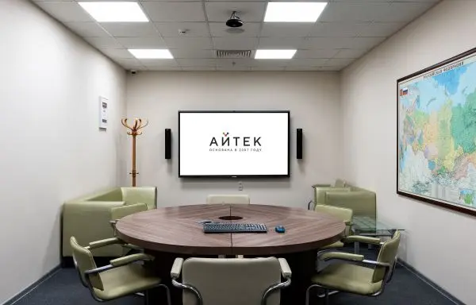

Маленькая переговорная комната
Страховая компания Ресо Гарантия
от 700 000 ₽ с НДС 22%Состав оборудования
Интерактивная панель 75" · Профессиональная звуковая система · PTZ камера · Потолочный микрофонный массив · Система управления
Также входит в стоимость
Проектирование · Монтаж и пусконаладка